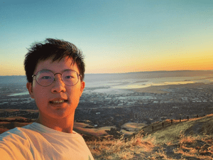

True heroism is to see the world as it, and to love it. -Roman Rolland
Latest Update:

A picture of me hiking the mission peak in Fremont
Introduction
Kai-Wen Cheng, also known as Kai, is a current 3rd year Electrical Engineering studying at the University of California,
San Diego. He is originally from Taipei, Taiwan, and he moved to the
US when he was 15 years old. Kai is passionate about Electronics, Software Design, Computer System, and numerous field of
knowledge related to technology. On top of that, he also holds great interest in Macroeconomics.
Kai's hobby surrounds traveling, hiking, and reading. Kai also loves learning different languages. Currently, Kai
speaks around 4 langauges (Cantonese, Mandarin, Taiwanese, English) fluently and knows about 2 other languages (Spanish and
Japanese).
UC San Diego's Giesel Library
Education
University of California - San Deigo
Sept 2019 - Present
BSc in Electrical Engineering
BA in Economics
EF Academy New York
Sept 2016 - May 2019
IB Diploma
Taipei Fuhsing Private School
Sept 2013 - June 2016
Taiwanese Middle School Diploma
Fun Fact
Favorite Piece of Code
#include <stdio.h>
int main() {
for(;;){
printf("Hello World\n");
}
}
Favorite Food
Gyudon Bowl
Favorite Book
Range: Why Generalists Triumph in a Specialized World